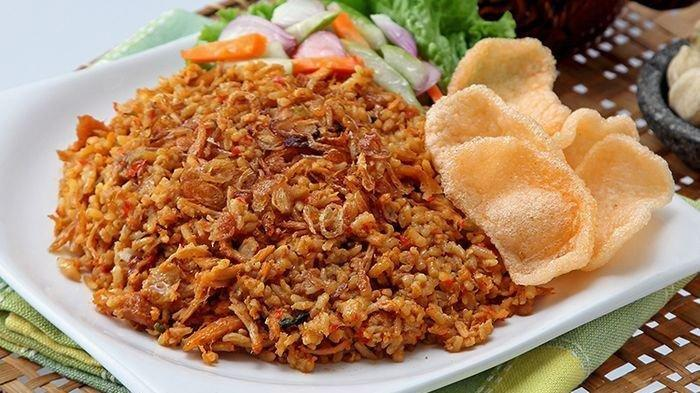

Nasi Goreng

Nasi Goreng, served with kerupuk (crackers) and acar (pickles).
Nasi goreng is a traditional Indo-Melayu dish,
which literrally translates to fried rice. It's relatively
simple, with as basic ingredients as: overnight rice, oil,
& eggs.
- The Ingredients
- Overnight Rice
- Cooking Oil
- Eggs
- Garlic
- Sweet Soy Sauce
- Ketchup
- Salt
- Cooking Steps
- Heat up oil in cooking wok/pan
- Cut up onions, stir fry
- Crack 2 eggs, scramble
- Throw in the rice
- As the rice cooks up, adds in salt, ketchup and soy
- Nasi Goreng is Served!